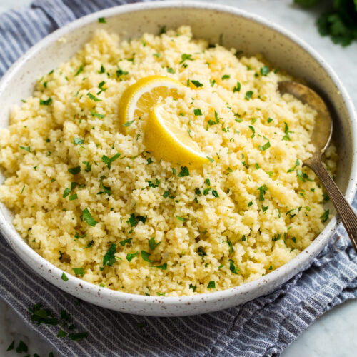

Lemon Pepper Couscous

Description
A warm and hearty couscous dish that uses the flavors of lemon pepper with fluffy couscous to produce a delicious high-protein and low-calorie dish.
Ingredients
- 10 oz chicken breast
- 1 medium zucchini
- 1 lemon
- 1 cup Israeli couscous
- 1 1/2 tbsps salted butter
- lemon pepper seasoning
- salt and pepper
Steps
- Cook 1 cup couscous per package instructions.
- Cut chicken into 1-inch cubes and slice zucchini into quarters.
- Melt 1 tbsp of butter over medium heat. Add chicken and season with lemon pepper seasoning, salt, and pepper.
- When chicken is lightly pink, add zucchini. Season again with more lemon pepper seasoning, salt, and pepper.
- Let zucchini cook, stirring occasionally until couscous is done.
- When couscous is done, fluff with a fork. Stir in 1/2 tbsp butter and a quarter of a lemon's worth of lemon juice.
- Serve